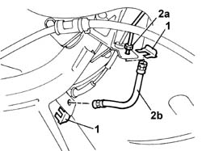

3330E34 Intermediate FLEXIBLE PIPE (one), left or right, to rear brakes - R.R.
- Path
- Procedures > 33 BRAKING SYSTEM > 3330 HYDRAULIC BRAKING SYSTEM > 3330E hydraulic brake system pipes > 3330E34 Intermediate FLEXIBLE PIPE (one), left or right, to rear brakes - R.R.
- Kind
- repair procedure (removal / refitting; the operation number is the code)
- Applies to
- all engines; all production periods
- Interactive page
- https://sloeber94.github.io/elrnDB-fPnd/en/#/2752746
Applies to: all engines; all production periods
 Removing
Removing
 Refitting
RefittingPlace the car on a lift.
Remove the protective cap on the bleed valve.
Connect the collection system (pipe and reservoir) to the bleed valve.
Operate the brake pedal until all the brake fluid reservoir is empty.
1. Remove the two retaining clips.
2. Undo connectors (2a), then remove the flexible pipe (2b).

Applies to: all engines; all production periods
Refitting
RemovingFit the intermediate pipe and tighten the brake pipe connectors to torque.
 | Fastening | Component | Ø | Value (daNm) |
|---|---|---|---|---|
- | Connector | BRAKING SYSTEM FITTING/S | M10 | 1.6 |
Secure the pipe to the body shell, fitting the retaining clips.
0010T64 brake and or clutch fluid check level and top up as necessary
0010T65 hydraulic brake system bleed air
Remove the vehicle from the ramp.